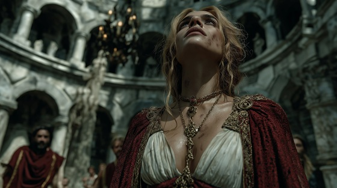

Ariadne, daughter of King Minos, defied her blood and her throne to help Theseus survive the Labyrinth.
She gifted him a ball of magical thread — the lifeline that would allow him to find his way back after confronting the Minotaur.
"Ariadne’s Thread" captures the courage and quiet rebellion of the princess who dared to betray a kingdom for love — and whose whisper would change fate itself.
Ariadne's Thread
I walk the halls of marble lies
A daughter lost beneath dead skies
I hear his vow, I feel the flame—
A stranger sworn to break the chain
No king shall know, no beast shall see—
The thread I weave shall set you free
Ariadne’s thread, spun through stone
A path to light, a seed once sown
Through twisting walls, through death's own bed—
Follow the thread, where none have fled
I steal the spool, I steal the night
I steal the fire from gods' own might
The Labyrinth breathes, the monster calls—
But in your hand, the darkness falls
No blade alone, no heart in steel—
Can pierce the maze without my will
Ariadne’s thread, spun through stone
A path to light, a seed once sown
Through twisting walls, through death's own bed—
Follow the thread, where none have fled
I tie the thread around your wrist
A whispered oath, a secret kiss
The gods may rage, the kings may fall—
But love shall rise beyond them all
Thread of gold, song of air
Carry you through shadow's snare
No throne, no beast shall steal the way—
The thread shall guide you through the grey
Ariadne’s thread, spun through stone
The path to dawn, the dark dethroned
From cursed halls to open skies—
The thread shall tear the tyrants’ lies
Thread of life, thread of flame—
Remember mine, remember my name